Panduan lengkap untuk pedagang yang memakai WA Admin AI dan untuk owner platform yang mengelolanya.
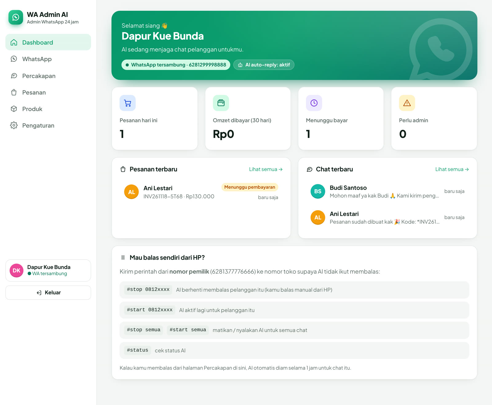
WA Admin AI adalah admin WhatsApp otomatis untuk toko online. Pelanggan tetap chat ke nomor WhatsApp toko seperti biasa, tapi yang membalas adalah AI, 24 jam sehari. AI-nya bisa:
| Peran | Yang dilakukan | Bagian manual |
|---|---|---|
| Pedagang (pemilik toko) | Mendaftar, mengisi info toko & produk, menyambungkan WhatsApp, memantau chat & pesanan. | Bagian A |
| Owner platform (pengelola layanan) | Menjalankan aplikasi di server, menyediakan akun Fonnte & AI, mengelola semua toko, menangguhkan toko yang belum bayar. | Bagian B |
| Pelanggan toko | Chat ke nomor WhatsApp toko seperti biasa. Tidak perlu memasang apa pun. | — |
Dari daftar akun sampai pesanan pertama masuk. Ikuti bab A1–A4 secara berurutan saat pertama kali memakai.
https://wa-admin-ai.up.railway.app./register.Untuk masuk lagi di lain waktu, buka alamat aplikasi, isi email dan password di halaman Masuk. Sesi login berlaku 30 hari di perangkat yang sama. Untuk keluar, klik Keluar di pojok kiri bawah (desktop) atau ikon pintu di pojok kanan atas (HP).
Halaman Pengaturan adalah "otak" AI. Semua yang kamu tulis di sini dipakai AI untuk menjawab pelanggan. Makin lengkap, makin sedikit chat yang perlu kamu balas sendiri.
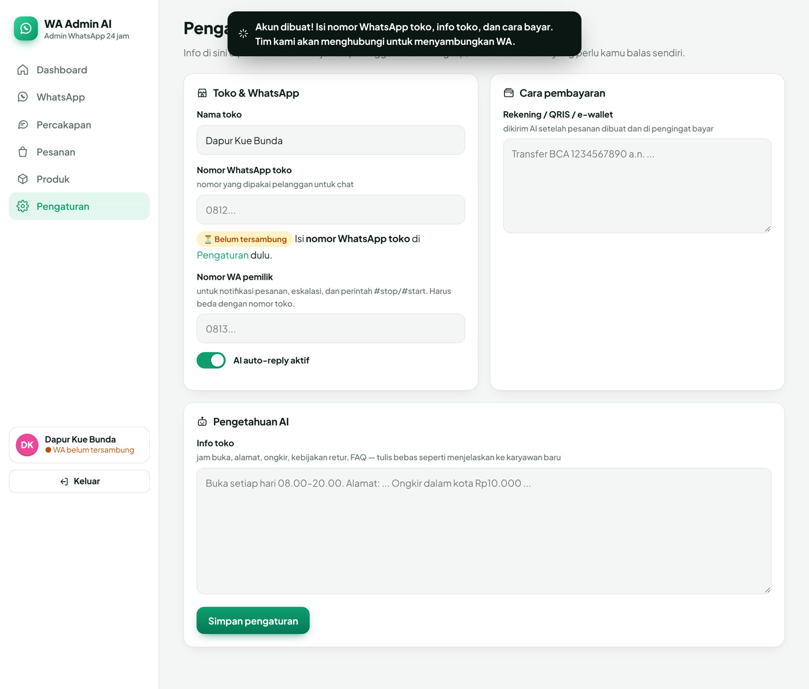
| Kolom | Penjelasan & contoh |
|---|---|
| Nama toko | Dipakai AI saat menyapa dan di pesan pengingat. Contoh: Dapur Kue Bunda. |
| Nomor WhatsApp toko | Nomor yang dihubungi pelanggan. Boleh ditulis 0812…. Setelah WhatsApp disambungkan, kolom ini terkunci. |
| Nomor WA pemilik | Nomor pribadi pemilik, harus berbeda dari nomor toko. Dipakai untuk notifikasi pesanan baru, notifikasi "perlu admin", dan perintah #stop/#start (bab A7). |
| AI auto-reply aktif | Sakelar utama. Kalau dimatikan, AI tidak membalas siapa pun. |
| Cara pembayaran | Rekening, QRIS, atau e-wallet. Dikirim AI setelah invoice dibuat dan di pesan pengingat. Contoh: Transfer BCA 1234567890 a.n. Bunda Sari, atau QRIS (minta ke admin). |
| Info toko | Tulis bebas seperti menjelaskan ke karyawan baru: jam buka, alamat, ongkir, cara pre-order, kebijakan retur, FAQ. |
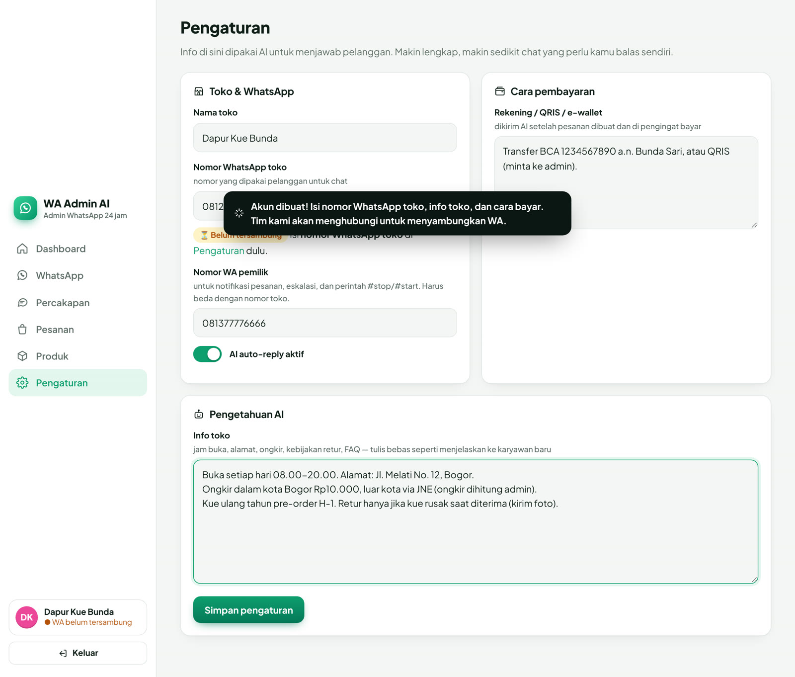
Klik Simpan pengaturan. Muncul notifikasi Tersimpan di atas layar.
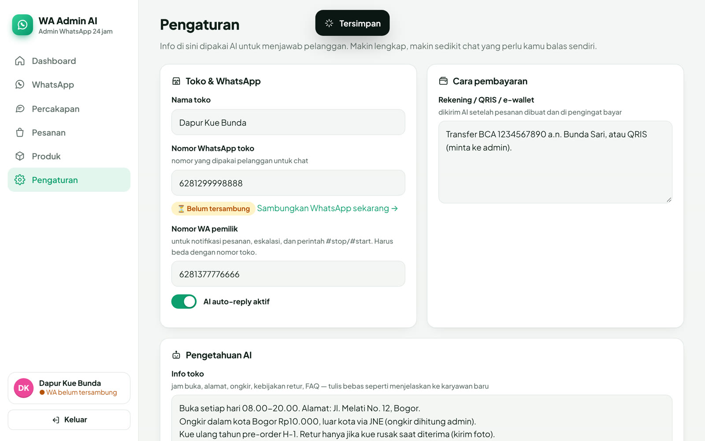
Menu Produk berisi katalog yang dipakai AI. AI hanya menawarkan produk, harga, dan stok yang ada di sini.
65000), Stok, dan Deskripsi.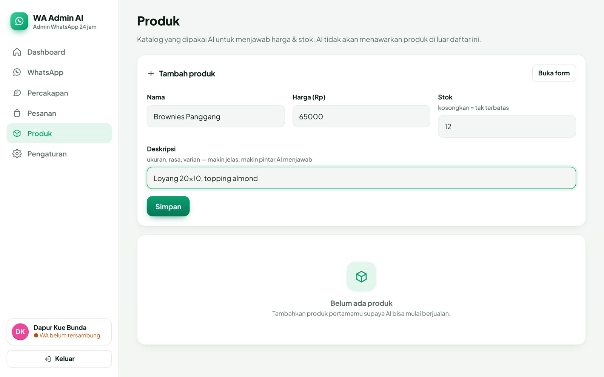
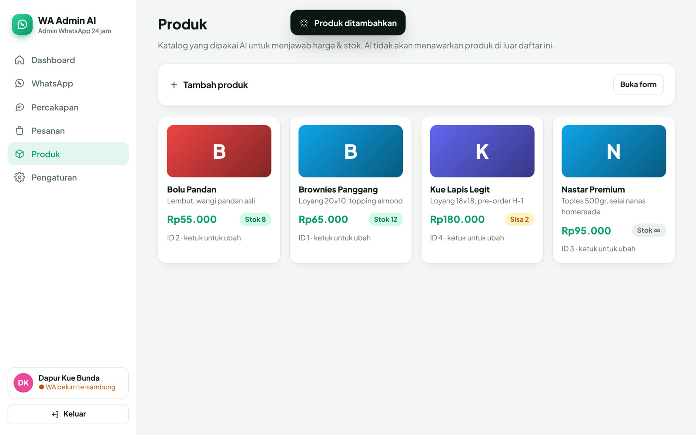
| Badge | Arti |
|---|---|
| Stok 12 | Stok aman. |
| Sisa 2 | Stok tinggal 3 atau kurang. Segera tambah. |
| Habis | Stok 0. AI akan bilang produk habis dan tidak membuat pesanan. |
| Stok ∞ | Stok tidak dibatasi. |
| Nonaktif | Produk disembunyikan dari AI. |
Klik kartu produk untuk membuka halaman ubah. Kamu bisa mengubah harga, stok, dan deskripsi, atau mematikan sakelar Aktif supaya produk tidak ditawarkan AI. Data pesanan lama tetap aman.
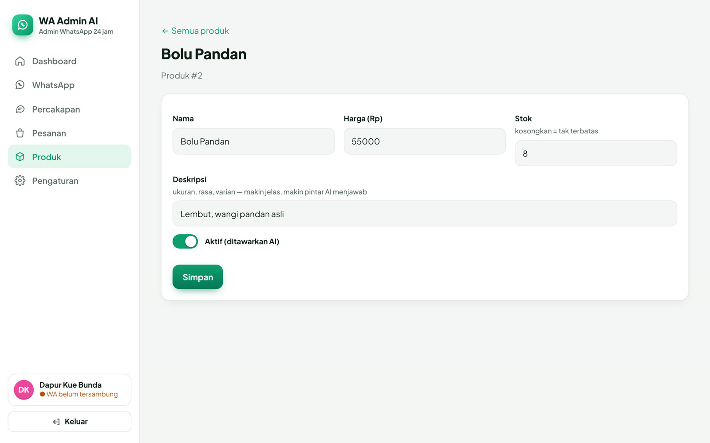
Langkah ini menautkan nomor WhatsApp toko ke WA Admin AI, mirip login WhatsApp Web. Cukup dilakukan sekali. Nomormu tetap milikmu, dan WhatsApp di HP tetap bisa dipakai seperti biasa.
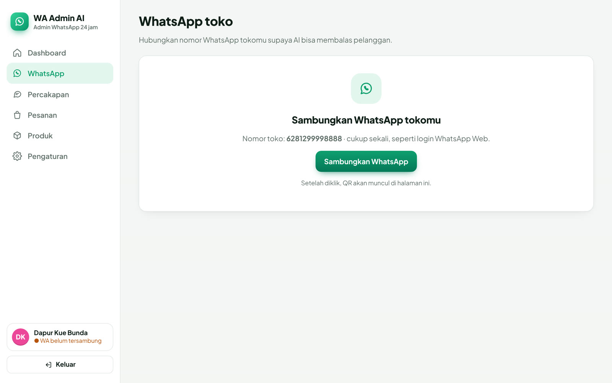
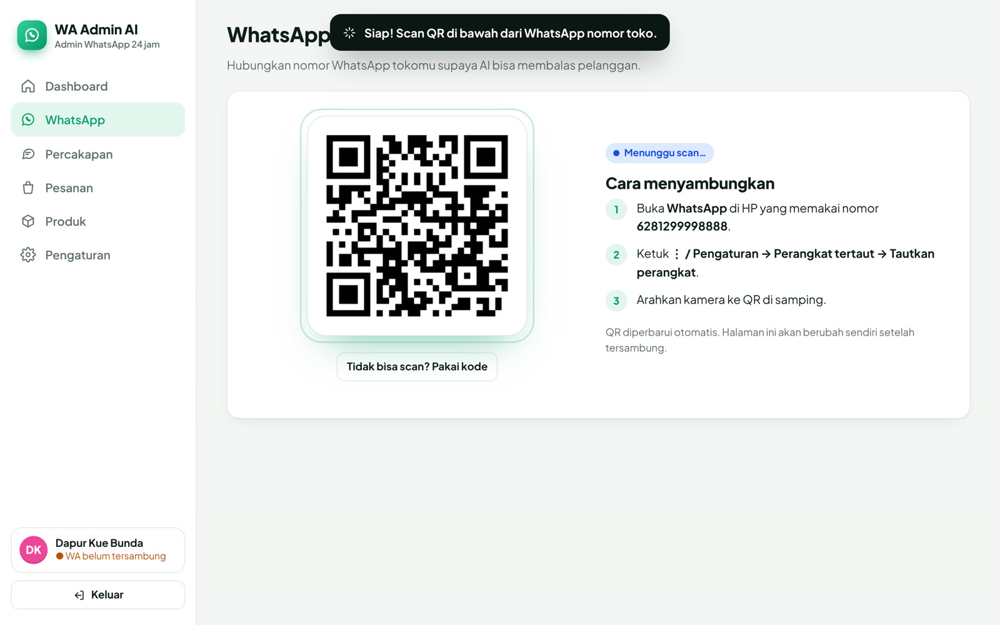
Kamu tidak bisa men-scan QR yang tampil di layar HP-mu sendiri. Pakai kode:
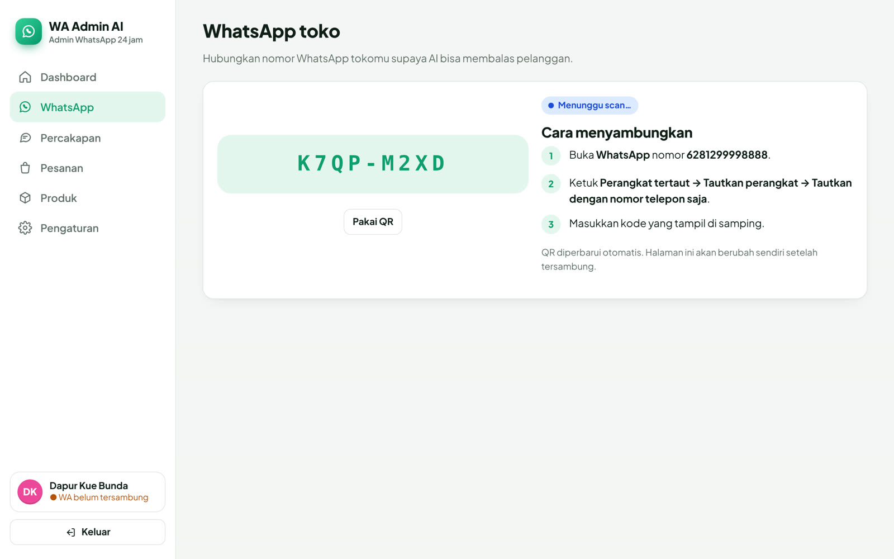
Begitu tersambung, halaman berubah sendiri menjadi tanda centang hijau. Status di sidebar menjadi ● WA tersambung.
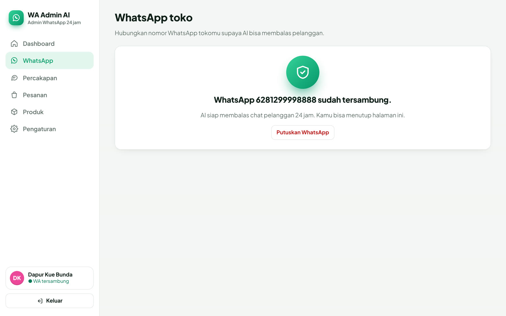
Setelah tersambung, setiap chat pribadi yang masuk ke nomor toko dijawab AI. Chat grup diabaikan. Alurnya:
| # | Pelanggan | Yang dilakukan AI |
|---|---|---|
| 1 | Bertanya harga/stok | Menjawab dari katalog dan info toko. |
| 2 | Mau pesan | Menanyakan produk, jumlah, nama, dan alamat, lalu mengirim ringkasan + total dan menunggu konfirmasi. |
| 3 | Menyetujui ringkasan | Membuat invoice (kode INVyymmdd-XXXX), mengirim cara bayar, mengurangi stok, dan mengirim notifikasi "🛒 Pesanan baru" ke nomor pemilik. |
| 4 | Bertanya status pesanan | Membaca status pesanan-pesanan terakhir pelanggan itu. |
| 5 | Komplain, retur, nego, atau hal yang tidak ada di info toko | Menyerahkan ke kamu: AI berhenti membalas pelanggan itu, chat ditandai Perlu admin, dan kamu dapat notifikasi "🔔 Perlu admin" di WA pemilik. |
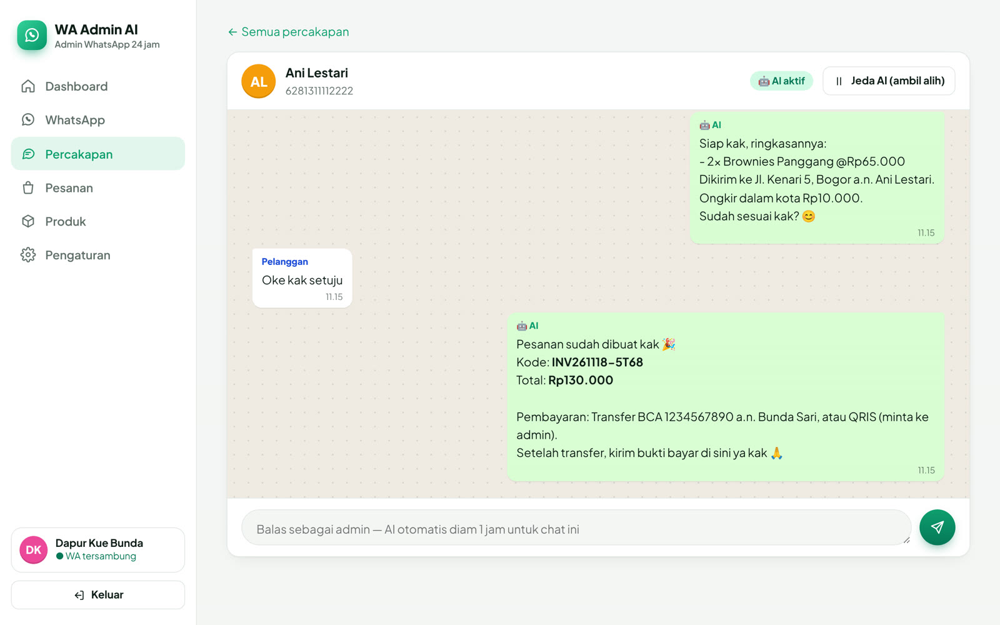
Menu Percakapan menampilkan semua pelanggan yang pernah chat. Chat yang butuh kamu selalu ada di urutan paling atas.
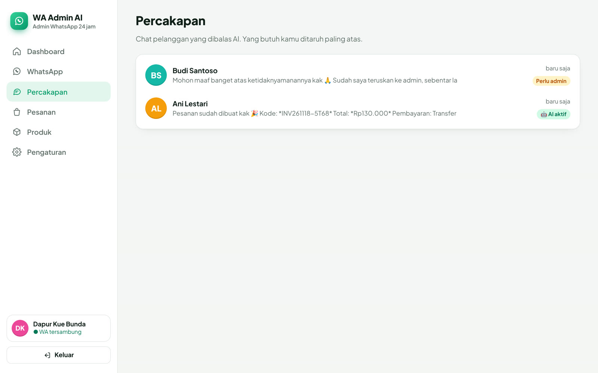
| Status | Arti |
|---|---|
| 🤖 AI aktif | AI membalas pelanggan ini. |
| Perlu admin | AI menyerahkan chat ke kamu dan berhenti membalas. Segera balas. |
| AI dijeda | Kamu (atau perintah #stop) menjeda AI untuk pelanggan ini sampai diaktifkan lagi. |
| AI diam sementara | Kamu baru membalas dari dashboard, jadi AI diam 1 jam lalu aktif sendiri. |
Klik nama pelanggan untuk membuka chat. Bubble putih adalah pesan pelanggan. Bubble hijau adalah balasan 🤖 AI atau 👤 Admin.
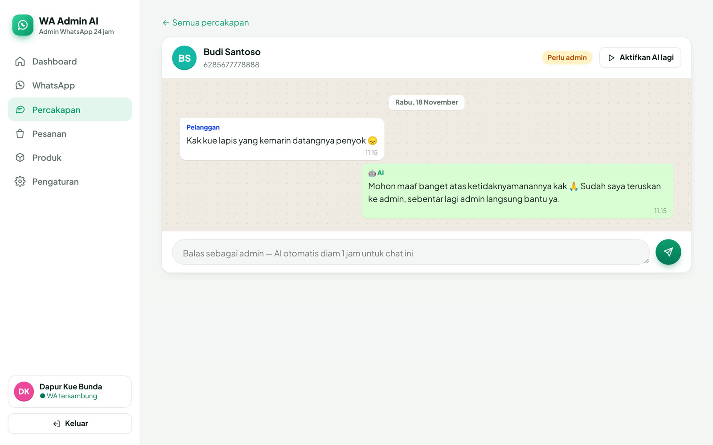
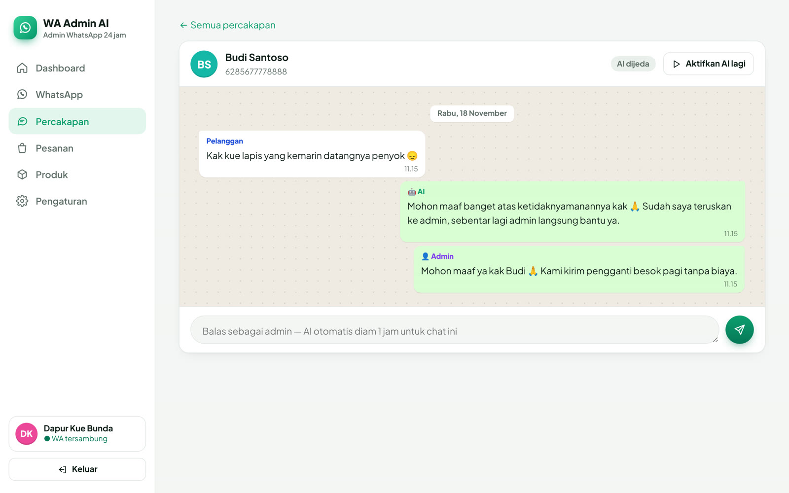
*tebal* dan _miring_ tampil tebal/miring di dashboard maupun di WhatsApp pelanggan.Kalau kamu membalas pelanggan langsung dari HP (bukan dari dashboard), aplikasi tidak tahu kamu sudah membalas, sehingga AI bisa ikut menjawab. Untuk mencegahnya, kirim perintah dari nomor WA pemilik ke nomor toko:
| Perintah | Fungsi |
|---|---|
#stop 08123456789 | AI berhenti membalas pelanggan dengan nomor itu. Kamu balas manual dari HP. |
#start 08123456789 | AI aktif lagi untuk pelanggan itu. |
#stop semua | Matikan AI untuk semua chat (misalnya saat libur atau stok kosong total). |
#start semua | Nyalakan AI lagi untuk semua chat. |
#status | Cek apakah AI aktif dan berapa chat yang sedang dijeda. |
Aplikasi membalas setiap perintah, misalnya "⏸️ AI berhenti membalas 628123456789. Silakan balas manual dari HP." Pesan lain dari nomor pemilik (bukan perintah) dibalas dengan daftar perintah. Nomor pemilik tidak pernah dilayani AI sebagai pelanggan.
08… atau 62….123456@lid dijeda lewat tombol Jeda AI di dashboard, karena perintah #stop memakai nomor telepon.Menu Pesanan berisi semua invoice yang dibuat AI. Gunakan tab di atas untuk menyaring per status.
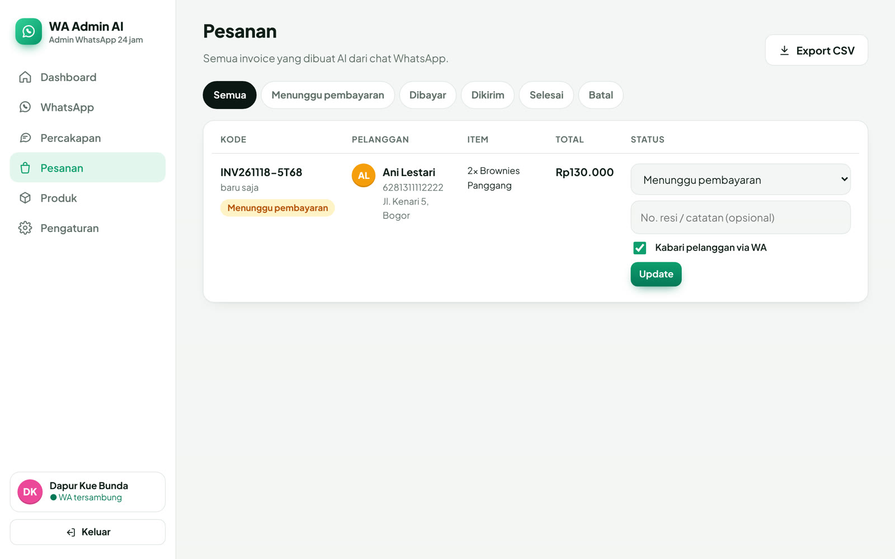
Menunggu pembayaran → Dibayar → Dikirim → Selesai, atau Batal kapan saja.
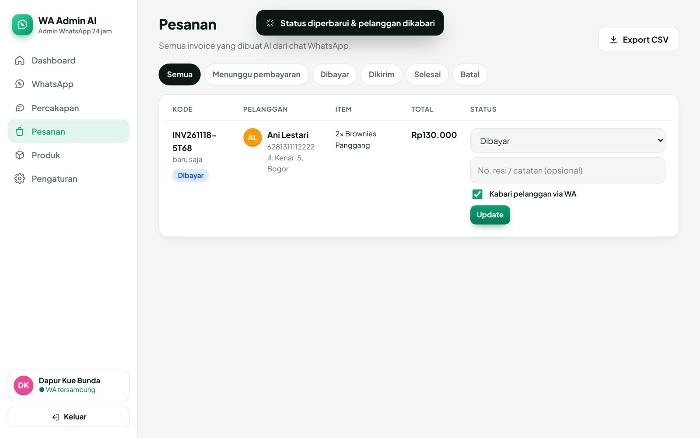
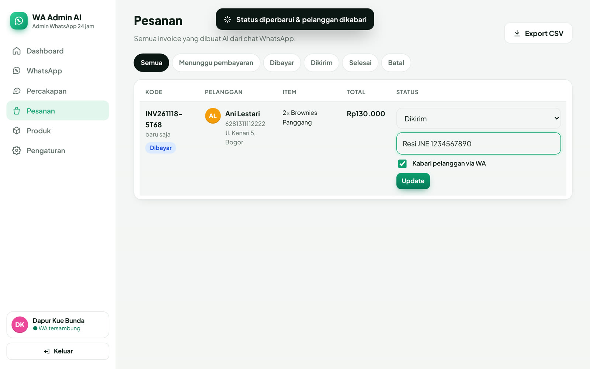
| Status baru | Isi pesan |
|---|---|
| Dibayar | "Terima kasih kak … Pembayaran pesanan INV… sudah kami terima dan segera diproses." |
| Dikirim | "Pesanan INV… sudah dikirim 🚚" + isi kolom resi. |
| Selesai | "Pesanan INV… selesai. Terima kasih sudah belanja di …" |
| Batal | "Pesanan INV… dibatalkan." + keterangan. Stok dikembalikan otomatis. |
Klik Export CSV (pojok kanan atas) untuk mengunduh pesanan sesuai tab yang aktif. File bisa dibuka di Excel atau Google Sheets untuk rekap omzet dan pengiriman.
| Bagian | Isi |
|---|---|
| Kartu hijau di atas | Sapaan, nama toko, jumlah chat yang menunggu, status WhatsApp, dan status AI. |
| Pesanan hari ini | Jumlah invoice yang dibuat hari ini. |
| Omzet dibayar (30 hari) | Total pesanan berstatus Dibayar, Dikirim, dan Selesai dalam 30 hari terakhir. |
| Menunggu bayar | Pesanan yang belum dibayar. |
| Perlu admin | Chat yang diserahkan AI ke kamu. Berbingkai oranye kalau lebih dari 0. |
| Pesanan & chat terbaru | 5 terakhir. Klik untuk membuka detailnya. |
Pesanan yang masih Menunggu pembayaran akan diingatkan otomatis lewat WhatsApp:
Isi pengingat: nama toko, kode invoice, total, cara pembayaran, dan permintaan bukti transfer. Pengingat berhenti setelah status diubah ke Dibayar atau Batal.
Dashboard bisa dipakai penuh dari browser HP. Menu ada di bagian atas dan bisa digeser ke samping. Tambahkan ke layar utama (Chrome: ⋮ → Tambahkan ke layar utama; Safari: Bagikan → Tambah ke Layar Utama) supaya terasa seperti aplikasi.
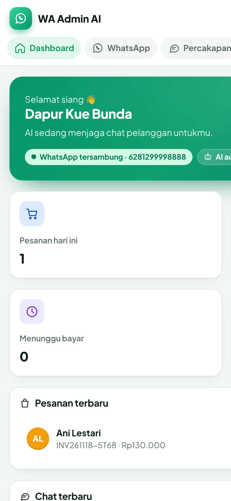
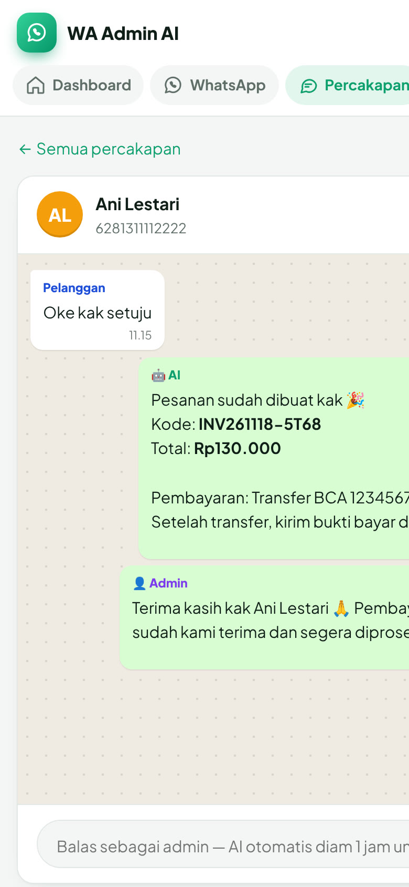
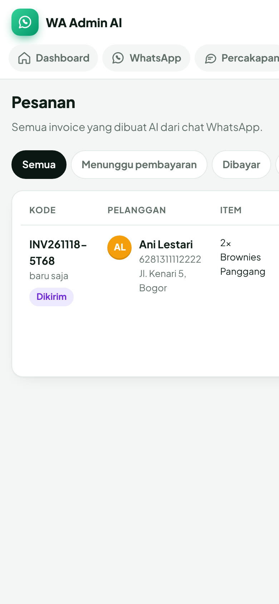
Tampilan otomatis berubah ke mode gelap kalau HP atau laptopmu memakai mode gelap.
#status dari nomor pemilik.Perbarui harga di Produk dan ongkir di Info toko. AI selalu memakai data terbaru untuk chat berikutnya.
Lengkapi Info toko dengan jawaban atas pertanyaan yang sering muncul (ongkir luar kota, COD, retur, dll).
Kirim #stop nomor-pelanggan dari nomor pemilik sebelum membalas (A7), atau balas dari dashboard supaya AI diam otomatis 1 jam.
Kolom nomor terkunci setelah tersambung. Hubungi owner platform untuk memindahkan device ke nomor baru.
Bisa. WA Admin AI hanya terhubung sebagai "perangkat tertaut", sama seperti WhatsApp Web.
Layanan ini memakai koneksi tidak resmi (bukan WhatsApp Business API dari Meta), jadi selalu ada risiko. Kurangi risikonya dengan tidak mengirim pesan massal/spam, tidak mengirim ke nomor yang tidak pernah chat, dan memakai nomor yang sudah lama aktif.
Untuk kamu yang menjalankan layanan WA Admin AI: memasang aplikasi, menyediakan akun Fonnte & AI, dan mengelola semua toko pelanggan.
| Komponen | Peran |
|---|---|
| Aplikasi WA Admin AI | Server Node.js + database SQLite. Melayani dashboard, menerima webhook Fonnte, dan memanggil AI. |
| Fonnte (akun milik platform) | Penghubung WhatsApp. Setiap toko = 1 device di akun Fonnte platform. Fonnte meneruskan chat masuk ke webhook aplikasi dan mengirim balasan. |
| Claude (Anthropic) | AI yang menyusun balasan, membuat pesanan, dan memutuskan kapan menyerahkan ke admin. |
| Railway (atau server lain) | Tempat aplikasi berjalan 24 jam, dengan Volume untuk file database. |
Alur pesan: Pelanggan → WhatsApp toko → Fonnte → POST /webhook/<kunci-toko> → aplikasi (simpan chat, tanya Claude) → kirim balasan lewat API Fonnte → pelanggan.
Model layanan: pedagang tidak perlu akun Fonnte. Semua device ada di akun Fonnte milikmu, dan biayanya dimasukkan ke harga langganan.
adnannasution/wa-admin-ai. File railway.json sudah mengatur perintah start (npm start) dan healthcheck /health./app/data.SESSION_SECRET, ANTHROPIC_API_KEY, PUBLIC_URL, SUPERADMIN_EMAILS, DATABASE_PATH=/app/data/app.db, NODE_ENV=production.PUBLIC_URL (contoh https://wa-admin-ai.up.railway.app), lalu redeploy.https://domainmu/health. Kalau muncul {"ok":true}, aplikasi berjalan.Menjalankan di komputer sendiri (untuk uji coba): Node.js ≥ 22.13, lalu cp .env.example .env, isi variabel, jalankan npm install dan npm run dev. Webhook Fonnte butuh URL publik, jadi pakai tunnel seperti cloudflared tunnel --url http://localhost:3000.
| Variabel | Wajib? | Keterangan |
|---|---|---|
SESSION_SECRET | Ya | Teks acak minimal 16 karakter untuk mengamankan login. Jangan diganti setelah live, karena semua orang akan ter-logout. |
ANTHROPIC_API_KEY | Ya | API key Claude dari console Anthropic. |
PUBLIC_URL | Ya | Alamat publik aplikasi, dipakai untuk membuat URL webhook Fonnte. |
SUPERADMIN_EMAILS | Ya | Email (pisahkan dengan koma) yang mendapat menu Admin Platform. |
DATABASE_PATH | Ya* | Lokasi file database. Di Railway: /app/data/app.db. Default ./data/app.db. |
FONNTE_ACCOUNT_TOKEN | Disarankan | Token akun Fonnte (menu Setting di fonnte.com, bukan token device). Kalau diisi, pedagang bisa menyambungkan WA sendiri. Kalau kosong, kamu menyambungkan secara manual (B5). |
CLAUDE_MODEL | Tidak | Default claude-opus-5-5. Untuk biaya lebih rendah coba claude-haiku-5-5, setelah menguji kualitasnya. |
CLAUDE_EFFORT | Tidak | Tingkat "berpikir" AI: low (default), medium, high. Makin tinggi, makin lambat dan mahal. |
AI_PAUSE_MINUTES | Tidak | Lama AI diam setelah admin membalas dari dashboard. Default 60. |
REMINDER_HOURS / REMINDER_MAX | Tidak | Jeda pengingat bayar (default 6 jam) dan jumlah maksimal (default 2). |
NODE_ENV | Disarankan | Isi production supaya cookie login hanya dikirim lewat HTTPS. |
FONNTE_DRY_RUN | Tidak | Isi 1 untuk uji coba. Pesan hanya dicetak di log dan tidak benar-benar dikirim. |
SUPERADMIN_EMAILS./register dan daftar dengan email itu.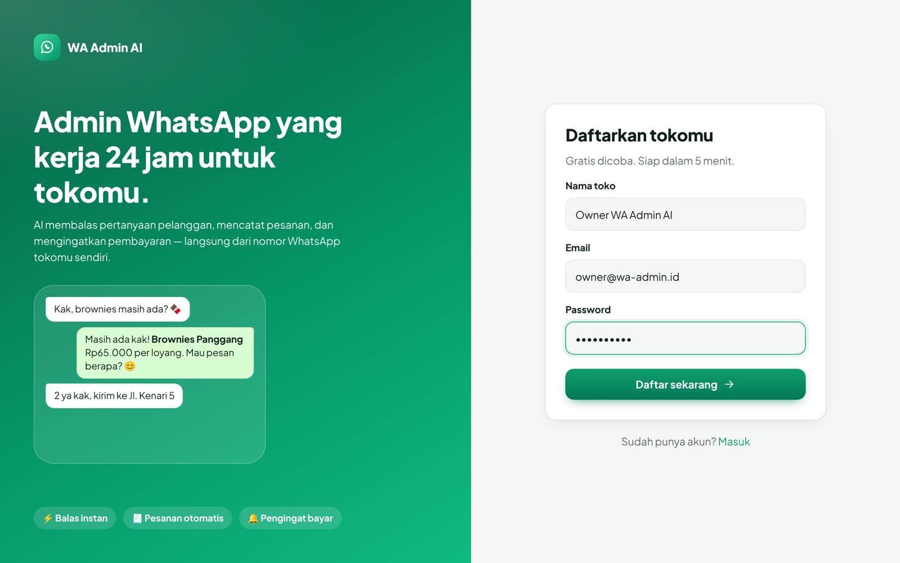
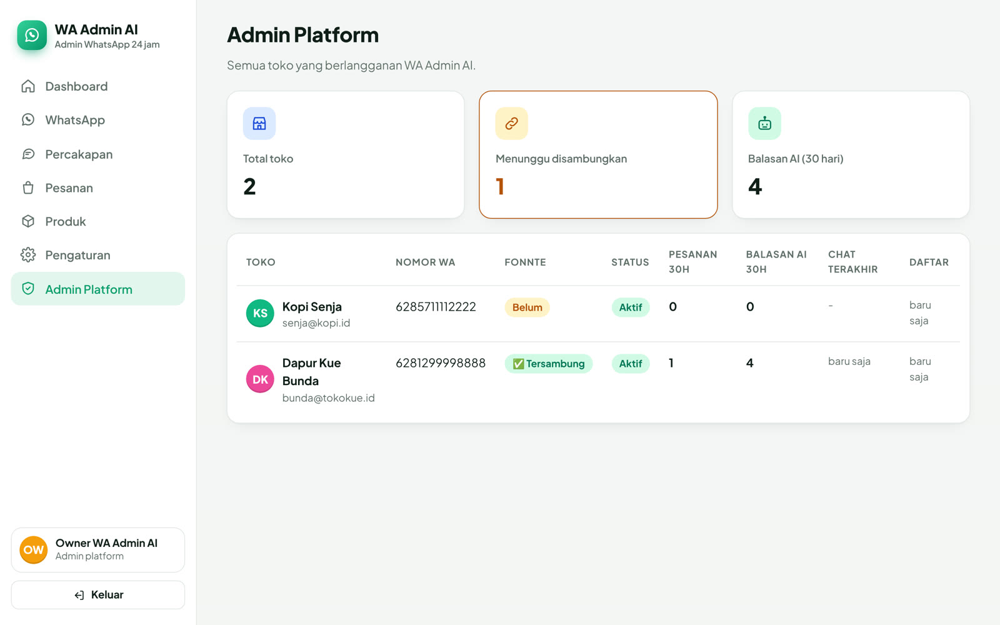
| Kolom | Arti |
|---|---|
| Fonnte | Belum = belum ada device; Device siap = device dibuat, menunggu scan; ✅ Tersambung = WhatsApp aktif. |
| Status | Aktif atau Nonaktif (ditangguhkan). |
| Pesanan 30h / Balasan AI 30h | Aktivitas 30 hari terakhir. Balasan AI kira-kira sebanding dengan biaya AI toko itu. |
| Chat terakhir | Kapan pelanggan terakhir chat. Toko yang lama sepi bisa jadi WA-nya terputus. |
Kartu Menunggu disambungkan berbingkai oranye kalau ada toko baru yang belum punya device.
FONNTE_ACCOUNT_TOKEN)Pedagang bisa melakukannya sendiri dari menu WhatsApp (bab A4). Kamu juga bisa memulainya dari panel admin:
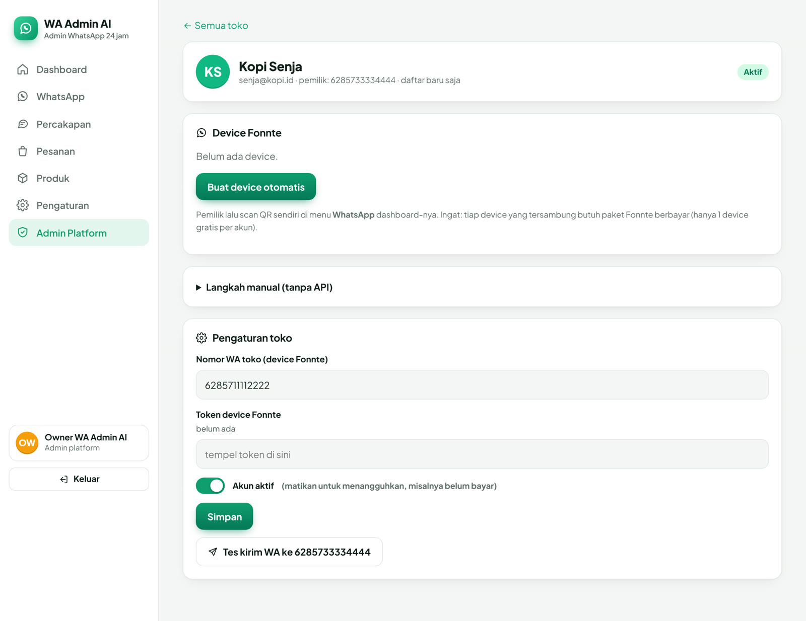
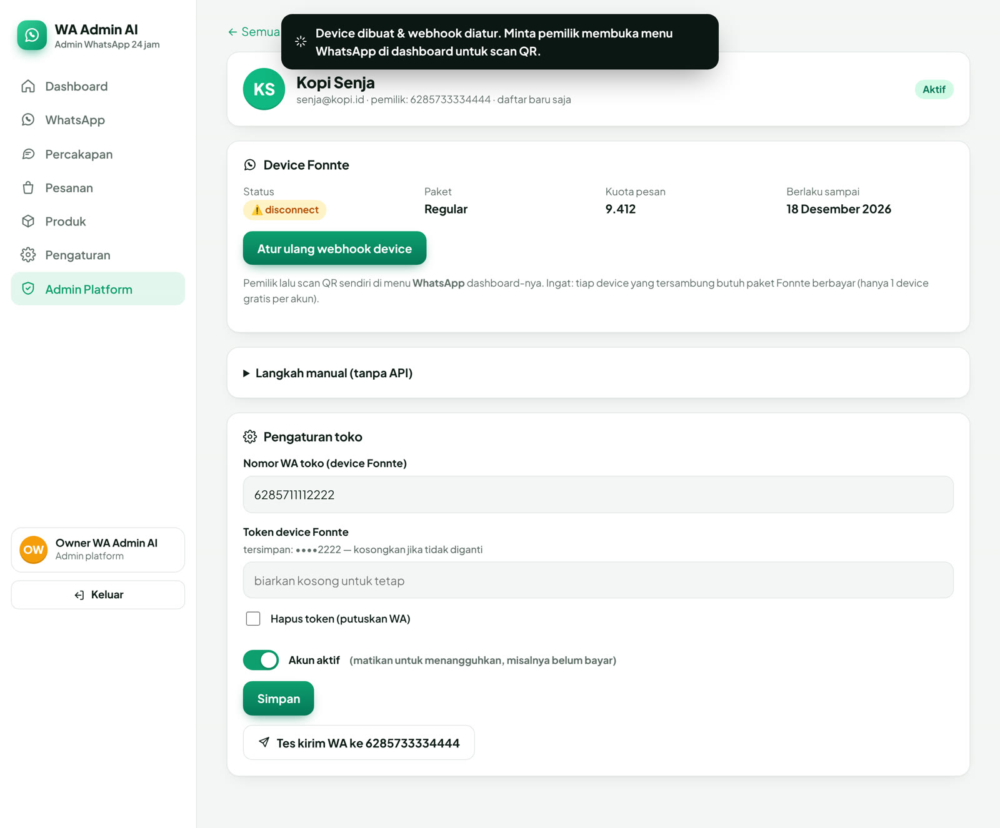
Tombol Atur ulang webhook device dipakai kalau domain aplikasi berubah atau webhook tidak berjalan.
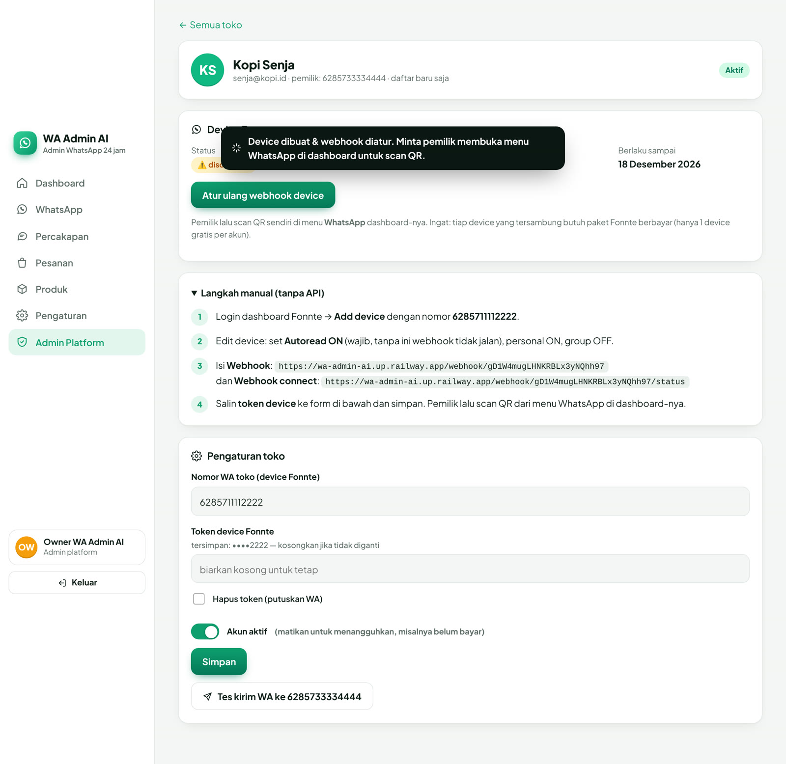
Di halaman toko, klik Tes kirim WA. Aplikasi mengirim pesan uji dari nomor toko ke nomor pemilik. Kalau gagal, notifikasi menampilkan alasannya (token tidak valid, device terputus, dan sebagainya).
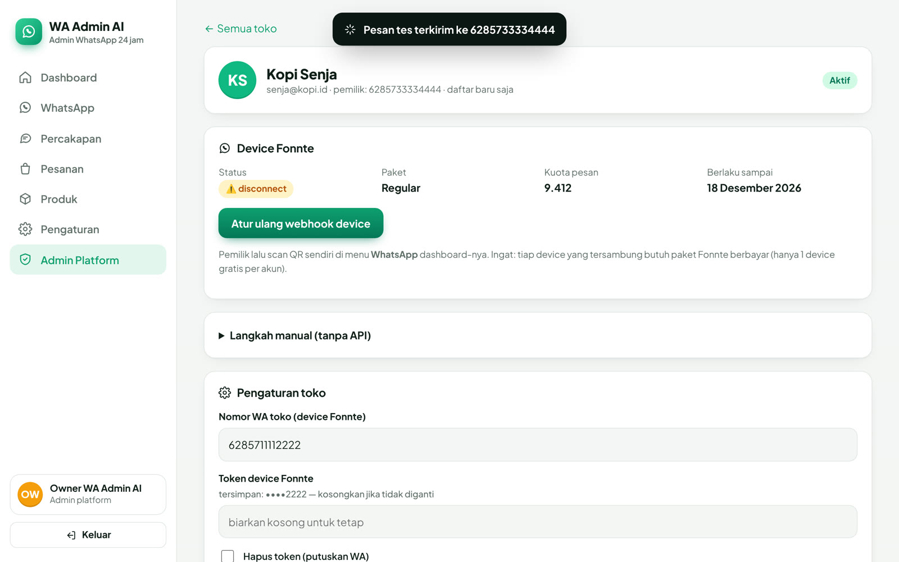
Kalau pedagang belum membayar langganan, matikan sakelar Akun aktif lalu klik Simpan. Akibatnya:
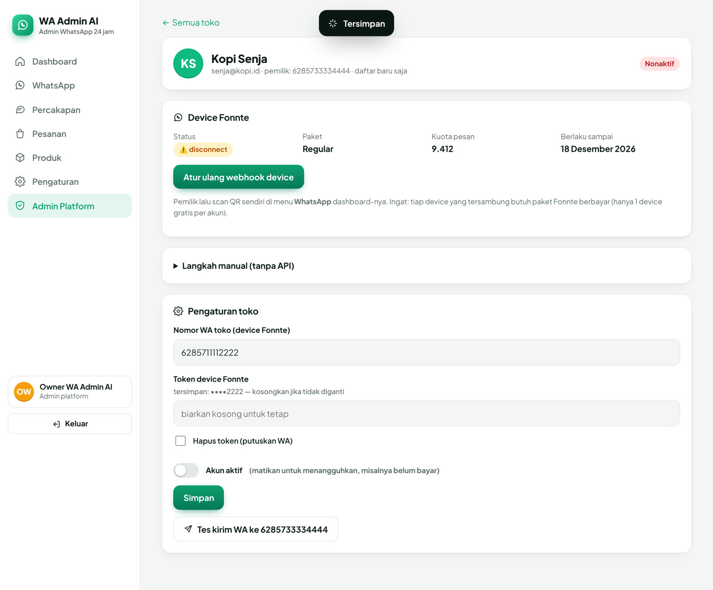
Centang Hapus token (putuskan WA) hanya kalau device toko memang mau dilepas, misalnya pindah nomor. Setelah itu buat device baru.
| Biaya | Ditanggung | Catatan |
|---|---|---|
| Paket Fonnte per device | Platform | 1 toko = 1 device = 1 paket. Masukkan ke harga langganan. |
| AI (Claude) | Platform | Dihitung per token. Perkiraan kasar: model Opus ±Rp100–400 per balasan, Haiku ±Rp5–20 per balasan. Pantau tagihan di console Anthropic. |
| Server (Railway) | Platform | Satu server untuk semua toko. |
CLAUDE_MODEL=claude-haiku-5-5 untuk paket murah. Uji dulu dengan chat sungguhan.CLAUDE_EFFORT=low untuk chat toko.Setiap ada commit baru di branch main, Railway melakukan deploy ulang otomatis. Tabel atau kolom baru ditambahkan otomatis saat start. Data lama tetap aman selama Volume terpasang.
/app/data/app.db (beserta app.db-wal jika ada).Chat disimpan di database aplikasi. AI hanya membaca 20 pesan terakhir per pelanggan saat menyusun balasan.
NODE_ENV=production supaya cookie hanya dikirim lewat HTTPS.ANTHROPIC_API_KEY, FONNTE_ACCOUNT_TOKEN, dan SESSION_SECRET hanya di Variables Railway. Jangan di-commit ke GitHub.SUPERADMIN_EMAILS hanya untuk orang yang benar-benar mengelola platform.| Gejala | Penyebab & solusi |
|---|---|
| Chat masuk tapi tidak tercatat di dashboard | Webhook Fonnte belum diisi atau Autoread OFF. Klik Atur ulang webhook device, atau cek di fonnte.com. |
| Chat tercatat tapi AI tidak membalas | Cek log Railway untuk pesan "AI error". Biasanya ANTHROPIC_API_KEY salah atau saldo habis. Cek juga apakah toko nonaktif atau AI-nya dimatikan. |
| Semua toko ter-logout setelah deploy | SESSION_SECRET berubah. Jangan ganti nilainya. |
| Data hilang setelah deploy | Volume belum terpasang atau DATABASE_PATH salah (B2). |
| "Kuota device gratis Fonnte platform penuh" | Beli paket untuk device di fonnte.com. |
| "Nomor ini sudah terdaftar di Fonnte" | Nomor itu sudah menjadi device di akun Fonnte lain. Minta pemiliknya menghapus device itu, atau sambungkan manual. |
| QR tidak muncul / "Token Fonnte tidak valid" | Token device salah atau device sudah dihapus. Hapus token di halaman toko, lalu buat device baru. |
| Status WA sering "terputus" | HP toko lama offline atau perangkat tertaut dihapus. Minta pedagang menyambungkan ulang dari menu WhatsApp. |
| Status | Kapan dipakai | Pengingat bayar |
|---|---|---|
| Menunggu pembayaran | Otomatis saat AI membuat invoice. | Ya (maks. 2×) |
| Dibayar | Dana sudah masuk. | Tidak |
| Dikirim | Barang dikirim (isi resi). | Tidak |
| Selesai | Barang diterima. | Tidak |
| Batal | Pesanan batal. Stok dikembalikan. | Tidak |
#stop 08xx · #start 08xx · #stop semua · #start semua · #status
| Istilah | Arti |
|---|---|
| Device | Satu nomor WhatsApp yang tertaut di akun Fonnte. |
| Perangkat tertaut | Fitur WhatsApp untuk memakai akun di perangkat lain (seperti WhatsApp Web). |
| Webhook | Alamat yang dipanggil Fonnte setiap ada chat masuk atau perubahan status sambungan. |
| Token device / token akun | Kunci rahasia Fonnte. Token device untuk satu nomor, token akun untuk mengelola semua device. |
| Eskalasi / Perlu admin | AI menyerahkan chat ke manusia. |
| Super admin / owner | Akun yang emailnya ada di SUPERADMIN_EMAILS. |
Manual ini dibuat dari aplikasi WA Admin AI versi 1.0. Screenshot memakai data contoh.